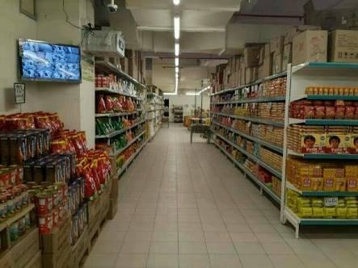

DMart Supermarket

DMart Supermarket is one of the most popular retail destinations near Neyveli, located along the Township Bypass Road. It is a one-stop shopping destination offering a wide range of products including fresh groceries, household essentials, clothing, kitchenware, and electronics at competitive prices.
The store is well-known for its clean aisles, organized layout, and consistent availability of everyday items at discounted rates. It is frequented by residents of the Neyveli Township and surrounding villages alike. Ample parking space and a smooth checkout experience make it a preferred shopping destination for families.
Nearby Places to Explore
Neyveli Bus Stand
Distance: 1.2 km
Distance: 1.2 km
Neyveli Railway Station
Distance: 2.0 km
Distance: 2.0 km